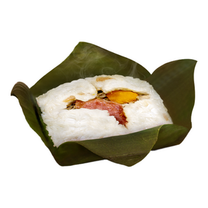

Mì Xúc Xích Trứng
45,000 VND
Mì Trộn Xúc Xích Trứng Chiên: Mì Trộn thoạt nhìn có vẻ đơn giản nhưng lại mang một hương vị đặc trưng riêng. Một tô Mì Trộn hấp dẫn với giá cả rất phải chăng, thêm một chút giá, một chút hẹ, có thể dùng thêm sa tế cay cũng làm ấm lòng bạn vào bất kì giờ nào trong ngày. Sẽ tuyệt hơn nếu bạn kết hợp dùng Mì Trộn với một phần trứng chiên và xúc xích nướng để làm tăng hương vị món ăn.
Bánh bao trứng cút
45,000 VND
Bánh Bao Trứng Cút: Bánh Bao Trứng Cút có nhân được làm từ thịt heo, củ hành, trứng cút, và nấm. Sản phẩm luôn được giữ nóng trong tủ hâm riêng cho Bánh Bao, luôn được đảm bảo là bánh mới, chất lượng và an toàn để phục vụ bạn bất cứ lúc nào trong ngày.

Xôi Lá Chuối
35,000 VND
Xôi Lá Chuối: Xôi lá chuối, món ăn dân dã của người Việt giờ đây đã sẵn sàng được phục vụ ở cửa hàng tiện lợi S Mart. Phần xôi mềm dẻo được bọc trong lớp lá chuối tươi được hấp chín kỹ. Nhân xôi đủ đầy với thịt gà xé dai dai, nấm đông cô lạ miệng cùng trứng muối và tôm khô mằn mặn. Tất cả hòa quyện, tạo nên hương vị đặc trưng và thơm ngon.
Bánh Mì Ốp La
45,000 VND
Bánh Mì Ốp La: Bánh mì ốp la là món ăn quen thuộc với hầu hết người Việt Nam bởi nó không chỉ ngon mà còn cung cấp đủ năng lượng để khởi đầu ngày mới.
Mì Trộn Indomie
25,000 VND
Mì Trộn Indomie: Nguyên liệu đơn giản, hương vị đậm đà, hấp dẫn, đó chính là lý do mì trộn Indomie nhiều năm liền đứng trong top 10 món mì được ưa chuộng nhất thế giới.
Mì Trộn
20,000 VND
Mì Trộn: Mì Trộn thoạt nhìn có vẻ đơn giản nhưng lại mang một hương vị đặc trưng riêng. Một tô Mì Trộn hấp dẫn với giá cả rất phải chăng, thêm một chút giá, một chút hẹ, có thể dùng thêm sa tế cay cũng làm ấm lòng bạn vào bất kì giờ nào trong ngày.
Bánh Giò
35,000 VND
Bánh giò: Bánh Giò được làm từ bột gạo tẻ với nhân làm từ thịt nạc kèm mộc nhĩ và hành khô. Món ăn thuần Việt này đã xuất hiện tại S mart với phong cách phục vụ nhanh chóng, sạch sẽ, bánh nóng vừa ăn, luôn đảm bảo sự ngon miệng cho bạn.
Bánh Bao Trứng Cút & Trứng Muối
50,000 VND
Bánh Bao Trứng Cút & Trứng Muối: Bánh Bao Trứng Muối & Trứng Cút có nhân được làm từ thịt heo, củ hành, lòng đỏ trứng muối, và nấm. Sản phẩm luôn được giữ nóng trong tủ hâm riêng cho Bánh Bao, luôn được đảm bảo là bánh mới, chất lượng và an toàn để phục vụ bạn bất cứ lúc nào trong ngày.
Bánh Bao Ca Dé
50,000 VND
Bánh Bao Ca Dé: Bánh Bao Ca Dé và Bánh Bao Khoai Môn, có nhân làm từ đậu xanh và khoai môn là hai lựa chọn thơm ngon cho bạn bên cạnh Bánh Bao truyền thống. Bánh Bao tại S Mart luôn nóng hổi để phục vụ bạn bất cứ lúc nào trong ngày.
Bánh Bao Khoai Môn
45,000 VND
Bánh Bao Khoai Môn: Bánh Bao Ca Dé và Bánh Bao Khoai Môn, có nhân làm từ đậu xanh và khoai môn là hai lựa chọn thơm ngon cho bạn bên cạnh Bánh Bao truyền thống. Bánh Bao tại S Mart luôn nóng hổi để phục vụ bạn bất cứ lúc nào trong ngày.
Xúc Xích(Cay/Phô Mai/Heo/Xông Khói)
35,000 VND
Xúc Xích(Cay/Phô Mai/Heo/Xông Khói): Xúc Xích tại S mart sử dụng nguồn nguyên liệu từ các nhà cung cấp uy tín trong nước và ngoài nước. Xúc Xích với lõi béo mềm bên trong, được bao bọc bên ngoài bởi một lớp bì giòn dai, chắc chắn sẽ là sự lựa chọn hoàn hảo để xoa dịu cơn đói của bạn.
Chuối
10,000 VND
Chuối: Trái cây luôn mang lại nguồn chất xơ, vitamin và khoáng chất tự nhiên dồi dào cho cơ thể. S Mart có đa dạng các loại trái cây vô cùng an toàn và tiện lợi như: táo, lê, quýt, dừa, chuối …
Dừa
15,000 VND
Dừa: Trái cây luôn mang lại nguồn chất xơ, vitamin và khoáng chất tự nhiên dồi dào cho cơ thể. S Mart có đa dạng các loại trái cây vô cùng an toàn và tiện lợi như: táo, lê, quýt, dừa, chuối …
Đùi Gà Nướng Vị Teriyaki
55,000 VND
Đùi Gà Nướng Vị Teriyaki: Đùi gà nướng vị Teriyaki mang một hương vị rất đặc biệt, với nước sốt đậm đà và hấp dẫn. Món ăn được chế biến sẵn và đóng gói trong bao bì hút chân không đảm bảo vệ sinh an toàn thực phẩm, thuận tiện cho việc sử dụng ngay tại cửa hàng.
Đùi Gà Nướng Vị Cay
55,000 VND
Đùi Gà Nướng Vị Cay: Đùi gà nướng vị cay tại S mart được tẩm ướp bằng những gia vị đậm đà, với vị cay vô cùng hấp dẫn. Món ăn được chế biến sẵn và đóng gói trong bao bì hút chân không đảm bảo vệ sinh an toàn thực phẩm, đựng trong hộp nhựa để có thể thuận tiện quay nóng nước khi sử dụng.